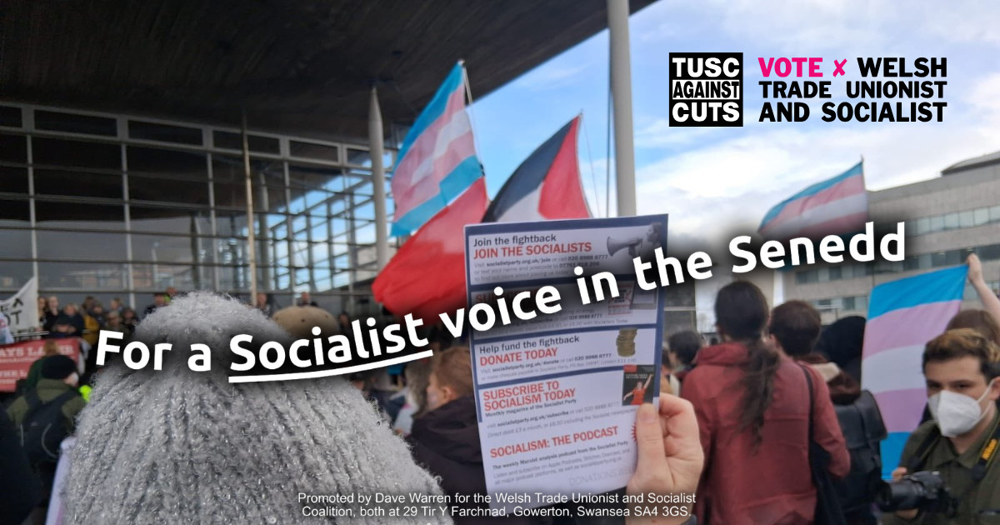
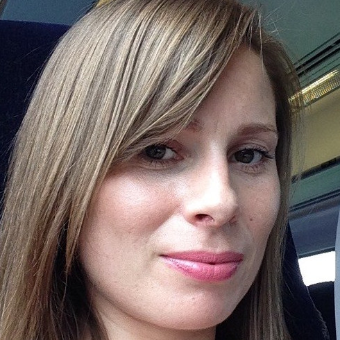

14 April 2026
The Socialist Party is standing in the Senedd (Welsh Parliament) elections under the banner of the Welsh Trade Unionist and Socialist Coalition (TUSC Cymru) and we are pleased to have launched our manifesto today.
TUSC is a coalition, where individuals and groups are free to run their own campaigns, provided they agree to a set of core policies.
Socialist Party candidates stand for:
In our constituencies, we will be the only candidates on the ballot paper supporting the democratically decided policy of 400,000 trade unionists in Wales to oppose all cuts and closures to public services, jobs, pay and conditions.
But above all we are campaigning for a new mass workers’ party – bringing together working class people in the trade union movement, community organisations, tenants associations and campaign groups in a new party to fight for the working class.
For that reason, we are also circulating our manifesto with a covering letter, making an appeal to trade unionists to support the campaign for working-class political representation.
“We believe that, rather than settle for lobbying politicians, the organised working class, primarily through trade unions, but also democratic community campaigns, tenants associations, etc., should be directly represented politically in a new workers party. Unfortunately, Labour no longer fulfils that role.”
All Welsh Trade Unionist and Socialist Coalition candidates have also pledged that, if elected, they would forgo the full £76,380 Senedd member salary and take home only a worker’s wage.
We have confirmed 5 candidates in two regions.
The coalition is also standing around 300 candidates in England across 60 councils, in addition to three mayoral candidates and six Scottish parliament seats.
John Williams is a hospitality worker, LGBT+ activist, and chair of the Cardiff General branch of the union Unite.
Helen Perriam is a nurse and Unison member, who has seen first-hand what Labour and Tory cuts and privatisation have done to our NHS.

Dave Bartlett is secretary of Cardiff Trades Union Council and led the successful campaign to save health facilities at Cardiff Royal Infirmary.

Ben Golightly is one of the elected coordinators of Disabled People Against Cuts Cymru, a high profile campaign fighting disability cuts, and a member of the union Prospect.
Mark Evans is a long-standing Unison trade unionist and Secretary of Swansea & District Trades Council. He has been a consistent campaigner against local government job cuts, council tax increases, and cuts to services.

Promoted by / hyrwyddwyd gan Dave Warren for the / ar gyfer Welsh Trade Unionist and Socialist Coalition / Clymblaid Undebwyr Llafur a Sosialwyr Cymru, both at / y ddau yn: 29 Tir Y Farchnad, Gowerton / Tregŵyr, Swansea / Abertawe, SA4 3GS.
We respect your privacy. This site does not use any persistent cookies or tracking scripts. Our website hosting provider (Microsoft) collects standard network logs for security and load-balancing purposes.